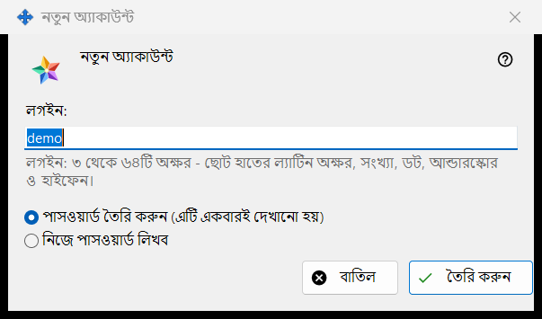
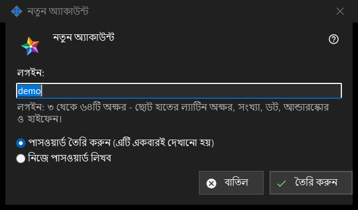

নতুন অ্যাকাউন্ট
এটি কীসের জন্য
একটি জানালা, দুটি মোড। নতুন অ্যাকাউন্ট আপনার চালানো Media Exchange Server-এ একটি অ্যাকাউন্ট যোগ করে; পাসওয়ার্ড রিসেট: <লগইন> বিদ্যমান অ্যাকাউন্টকে নতুন পাসওয়ার্ড দেয়। এগুলো Share Manager সেটিংসের Media Exchange Server পৃষ্ঠায় অ্যাকাউন্ট তালিকার নিচের অ্যাকাউন্ট যোগ করুন.. ও পাসওয়ার্ড রিসেট করুন.. বোতাম থেকে খোলে; রিসেটের জন্য একটি অ্যাকাউন্ট বাছা থাকতে হবে।


এই ক্রমে
- যোগ করার মোডে লগইন লিখুন।
- পাসওয়ার্ড কীভাবে তৈরি হবে তা বেছে নিন।
- রিসেট মোডে ঠিক করুন অ্যাকাউন্টের সব ডিভাইস সাইন-আউট হবে কি না।
- তৈরি করুন বা রিসেট করুন চাপুন।
- পরের জানালা থেকে তৈরি হওয়া পাসওয়ার্ড কপি করুন, অথবা নিজের পাসওয়ার্ড লিখুন।
উপাদানসমূহ
প্রথম অ্যাকাউন্টের বিবৃতি
একেবারে প্রথম অ্যাকাউন্টে জানালাটি শুরু হয় এই লাইন দিয়ে: প্রথম অ্যাকাউন্ট তৈরি করার আগে পড়ুন সার্ভারের অপারেটর কী দেখতে পারেন, আর তার নিচে থাকে বিবৃতির শুধু-পঠনযোগ্য বাক্স। পরের অ্যাকাউন্টে ও রিসেটে এটি দেখানো হয় না।
লগইন
শুধু যোগ করার মোডে। 3 থেকে 64টি অক্ষর: ছোট হাতের লাতিন অক্ষর, অঙ্ক, বিন্দু, আন্ডারস্কোর ও হাইফেন; বড় হাতের অক্ষর ছোট হাতের হয়ে যায়। লেখাটি লগইন হতে না পারলে ইঙ্গিত সতর্কতার রঙে দেখায়, এবং তা না হওয়া পর্যন্ত তৈরি করুন এগোয় না।
পাসওয়ার্ড কীভাবে তৈরি হয়
পাসওয়ার্ড তৈরি করুন (এটি একবারই দেখানো হয়) ডিফল্ট: প্রোগ্রাম নিয়ম মেনে একটি এলোমেলো পাসওয়ার্ড বানায় এবং পরের জানালা সেটি মাত্র একবার দেখায়। নিজে পাসওয়ার্ড লিখব অ্যাকাউন্টের পাসওয়ার্ড জানালা খোলে, যেখানে একটি সরাসরি লাইন বলে দেয় কী কম আছে: কমপক্ষে 10টি অক্ষর, একটি বড় হাতের ও একটি ছোট হাতের লাতিন অক্ষর এবং একটি অঙ্ক।
প্রতিটি ডিভাইস সাইন-আউট
শুধু রিসেট মোডে। এই অ্যাকাউন্টের সব ডিভাইস সঙ্গে সঙ্গে সাইন-আউটও করুন ডিফল্টভাবে টিক দেওয়া থাকে। তখন ফলাফলের লাইন জানায় পাসওয়ার্ড বদলেছে এবং অ্যাকাউন্টের সব ডিভাইস সাইন-আউট হয়েছে; টিক ছাড়া সেটি শুধু জানায় পাসওয়ার্ড বদলেছে।
সার্ভার গ্রহণ করার পর
ফলাফলের লাইন জানায় অ্যাকাউন্ট তৈরি হয়েছে। তৈরি করা পাসওয়ার্ড নিজস্ব জানালায় একবারই দেখা যায়, যেখানে আছে পাসওয়ার্ড কপি করুন ও নিজের পাসওয়ার্ড সেট করুন..; দ্বিতীয় বোতামটি রিসেটে ফিরিয়ে নেয়, যেখানে নিজে পাসওয়ার্ড লেখার বিকল্প বাছা থাকে। এই পিসিতে অ্যাকাউন্টের পাসওয়ার্ড রাখুন চালু থাকলে পাসওয়ার্ডটি এই পিসিতেও রাখা হয় এবং অ্যাকাউন্টটি পায় পাসওয়ার্ড দেখান.. বোতাম। এই বিল্ডে এক্সচেঞ্জ ক্লায়েন্টের সুবিধা থাকলে এবং এই পিসির নিজের কোনো অ্যাকাউন্ট না থাকলে এটি এই পাসওয়ার্ড দিয়েই অ্যাকাউন্টের প্রথম ডিভাইস হিসেবে সাইন ইন হয়ে যায়।
ম্যানেজার সেটিংস · SFTP শেয়ারিং সেটিংস · এক্সচেঞ্জ সার্ভার সেটিংস